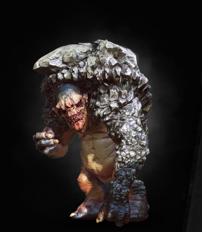

| HomeRock Troll |
|  |
Bestiary Description:Man most riddly talk. But no tricksy. Or troll boom man head.
— rock troll dwelling in a cave on Undvik
If while hiking high in the mountains you come across a walking stone, do not think your eyes deceive you. Instead, draw your sword — for before you stands a rock troll. True, not every encounter with these creatures ends in a fight -while not particularly intelligent, trolls are capable of reason — but it is better to prepare for the worst. Otherwise, your hike might end not on the summit, but in their stew. |
| Tactics:During a fight with an encountered rock troll one thing to primarily focus on in the fight is the stomach of the troll. Hitting the stomach will temporarily knock it backwards disrupting any of it's regular attacks. This makes the fight very easy to anyone with a strong enough of a blade, but be careful, as they have a large amount of health and can still hit you if you miss.
|
| Location: Woods of Skellige |
| Vulnerable Against: Ogroid Oil, Quen |